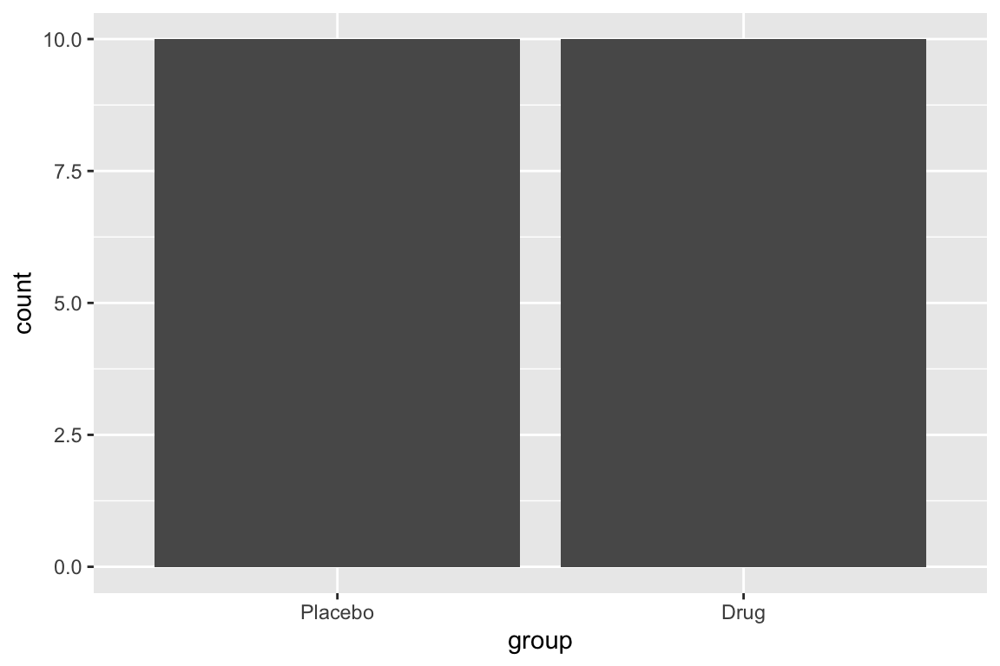
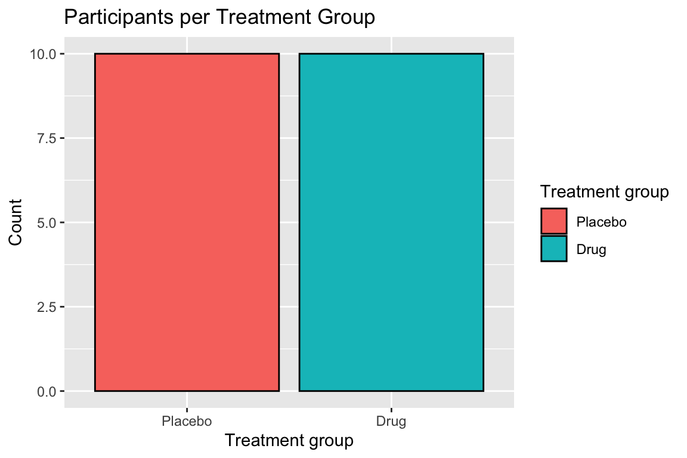
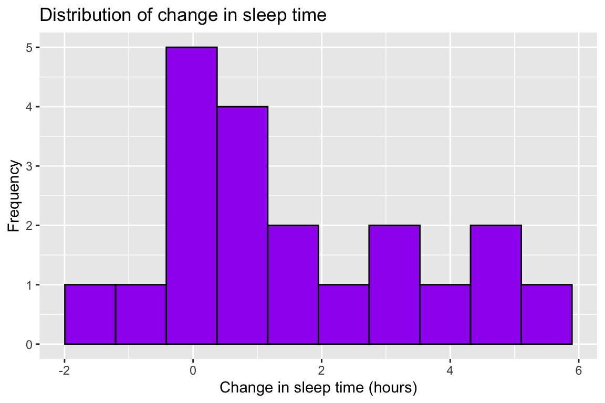
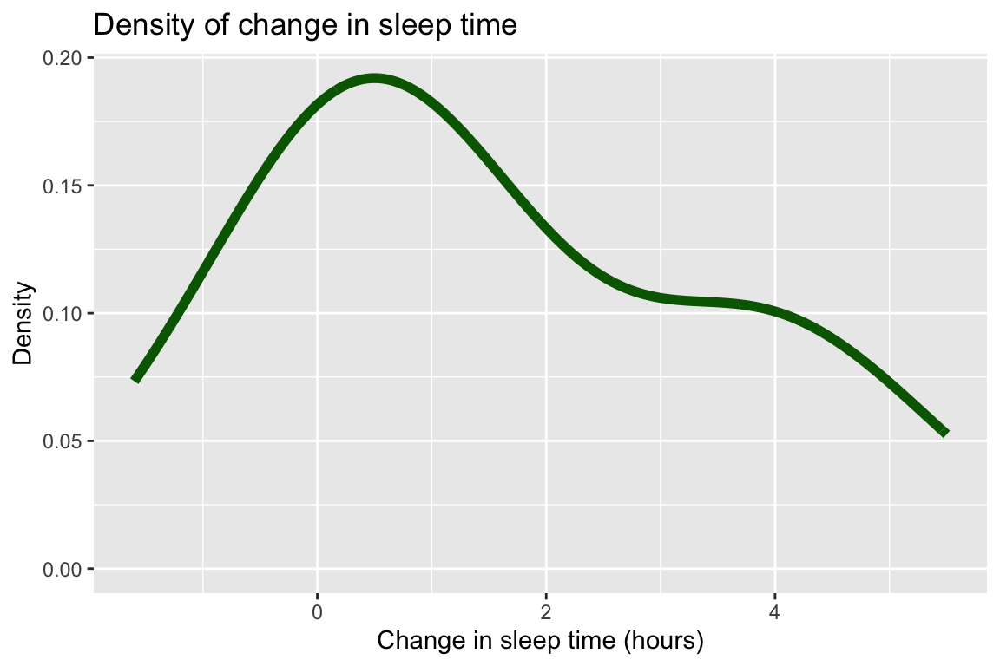
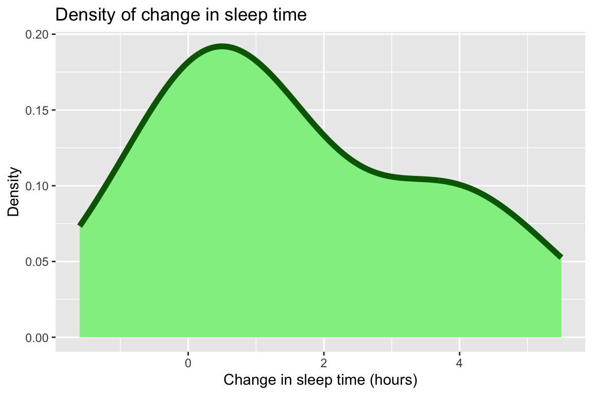
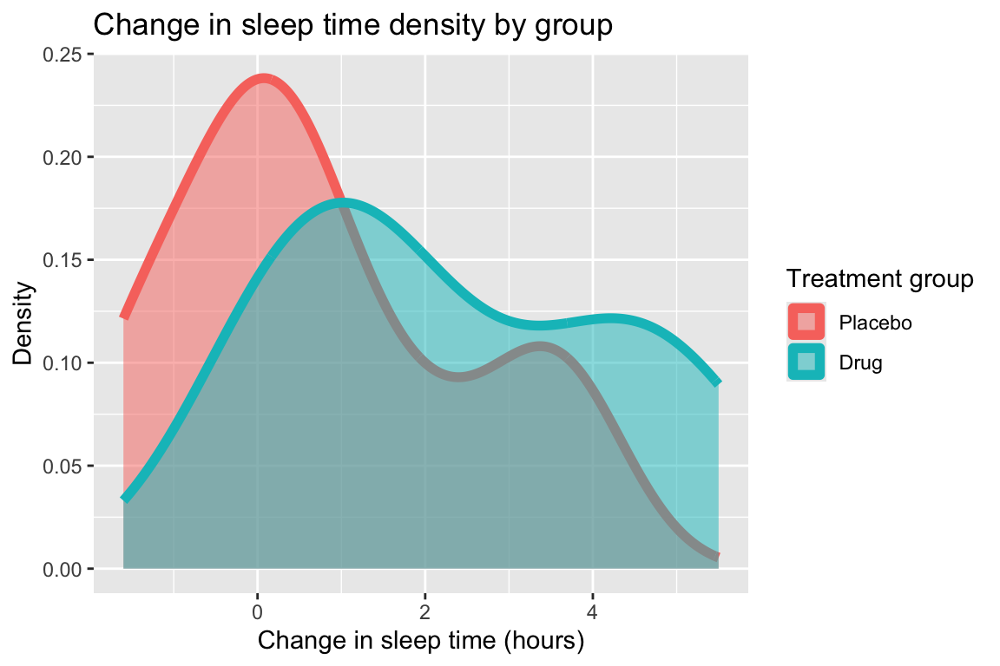
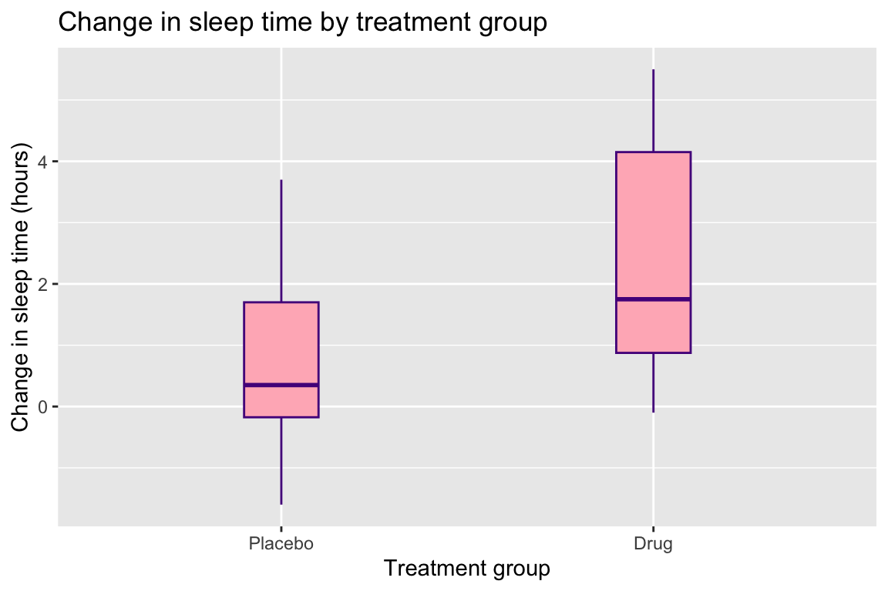
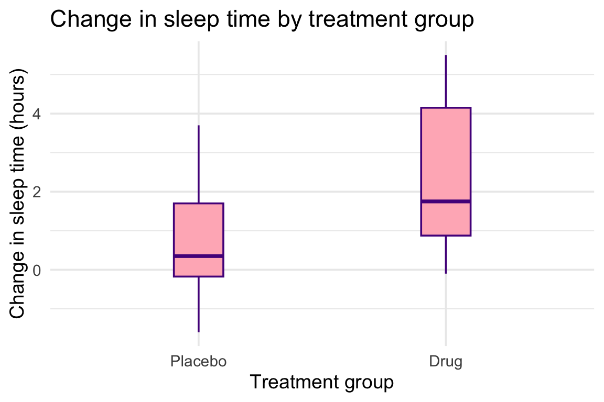
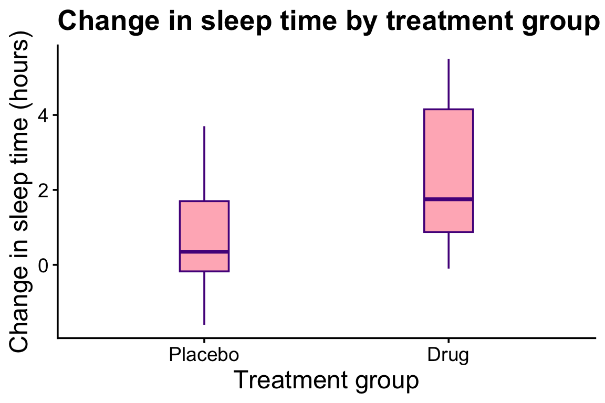
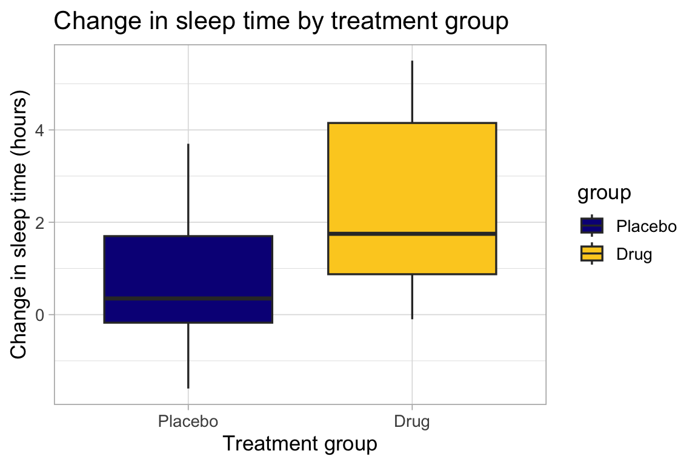

In psychology and, more generally, scientific research, a plot is not just for decoration. It represents the evidence for your hypotheses and conclusions. A good plot should be easy to read and the style should be consistent across your dissertation, report, or paper.
In this reading, you will learn how to control the most useful styling options in ggplot2:
Every ggplot plot is built by adding layers together with the + symbol. You will see this same recipe in every example below:
ggplot(data, aes(...)): specifies the data and which variables to plot
geom_??(): which type of plot (bar, histogram, density, boxplot)
labs(): title and x/y axis labels.
theme_??(): the overall look, and font size.
Changing the style of a plot almost always means adding to, or editing, one of these layers, rather than rewriting the whole thing.
Choosing the right plot for your variables
Before you style a plot, make sure you have picked an appropriate plot type for your variables.
Categorical variable (e.g. treatment group): use a bar plot (geom_bar()) to show counts in each category.
Numeric variable, one group (e.g. all scores together): use a histogram (geom_histogram()) or a density plot (geom_density()) to show the shape of the distribution.
Numeric variable, comparing groups: use a boxplot (geom_boxplot()) to compare medians and spread across groups at a glance. You can also use histograms or density plots with separate colours for each group.
Load packages and data
We will use the built-in sleep dataset that ships with the basic R installation. This is a classic dataset from a small clinical trial: 20 patients were given either a placebo or a sleep drug, and researchers recorded how much extra sleep (in hours) each patient got. It has just three variables, which keeps things simple while we focus on styling:
extra: a numeric variable, the increase in hours of sleep.
group: a categorical variable coded 1 and 2 indicating, respectively, if the patient received the Placebo or the Drug.
ID: a numeric variable, the patient ID (1-10 for each group).
# Recode the group variable to a factor with better labels# Store the resulting data in a new object called sleep_datasleep_data <- sleep |>mutate(group =factor(group, levels =c(1, 2), labels =c("Placebo", "Drug")) )glimpse(sleep_data)
You will see colour and fill used in two different ways, and it is easy to confuse them:
Inside aes(), e.g. aes(fill = group): this maps a variable in your data to colour, so each group automatically gets a different colour, and a legend appears.
Outside aes(), e.g. geom_bar(fill = "tomato4"): this assigns every bar to the same fixed colour, regardless of group. No legend is created, because there is no variability in colours.
As a rule of thumb: specify inside aes() when colour should depend on your data, and specify outside when you just want one fixed colour for the whole plot.
1. Bar plots
Bar plots are for categorical variables, like our group variable. The height of each bar shows how many observations fall into that category.
Basic bar plot
ggplot(sleep_data, aes(x = group)) +geom_bar()

We can improve the clarity of the plot by adding a title and axis labels. The labs() function is used to change the labels of the title and x/y axes. The labels must be specified within quotation signs "..." as they represent a short text sentence.
We can also tell ggplot to change the colour or fill depending on the values within a variable in the data. In this case we tell R to change the colours of the bars (fill) depending on the values of the group variable. This is done by putting fill = group inside the aes() function. ggplot will automatically assign a different colour to each group and add a legend to the plot.
ggplot(sleep_data, aes(x = group, fill = group)) +geom_bar(colour ="black") +labs(title ="Participants per Treatment Group",x ="Treatment group",y ="Count",fill ="Treatment group" )

If you don’t like the default colours, you can change them using a different colour palette. The scale_fill_brewer() function allows you to choose from a range of colour palettes - see here for all the available ones: https://ggplot2-book.org/scales-colour.html#brewer-scales
For example, we can use the “Set2” palette by specifying the palette name in the argument palette = ... of the scale_fill_brewer() function.
It’s worth noting that in this case the different colours don’t add any extra information and are not needed. The two groups are already clearly distinguishable from the x-axis labels “Placebo” and “Drug” underneath each bar.
2. Histograms
Histograms are for a single numeric variable. They group values into bins and show how many observations fall into each bin, giving you a picture of the overall shape of the distribution.
Important styling decisions for histograms include:
bins controls how smooth or rough the picture looks. If you are unsure how many bins to use, leave this out as it will use the default bins = 30 which works most of the time.
Border colour (in colour) can make bars easier to distinguish.
Keep a sensible contrast between fill and background.
We can improve the previous plot by changing the number of bins from the default (30) to 10, as there are too many gaps. Next, we can change the colour of the bars to purple and the border to black. Finally, we improve the axes labels to be more user-friendly.
ggplot(sleep_data, aes(x = extra)) +geom_histogram(bins =10, fill ="purple", colour ='black') +labs(title ="Distribution of change in sleep time",x ="Change in sleep time (hours)",y ="Frequency" )

3. Density plots
A density plot is a smoothed version of a histogram.
Line-only density plot
A density plot is mainly based on a line, so you can control its colour using the colour argument. You can also control the thickness of the line using the linewidth argument.
ggplot(sleep_data, aes(x = extra)) +geom_density(colour ="darkgreen", linewidth =2) +labs(title ="Density of change in sleep time",x ="Change in sleep time (hours)",y ="Density" )

Filled density by group
The area under the curve can be coloured using the fill argument.
ggplot(sleep_data, aes(x = extra)) +geom_density(colour ="darkgreen", fill ='lightgreen', linewidth =2) +labs(title ="Density of change in sleep time",x ="Change in sleep time (hours)",y ="Density" )

Filled density by group
As you add more plots to the same figure, e.g. if you compare density curves for two groups, you can make the curves easier to distinguish by making them slightly transparent.
You control the transparency using the alpha argument, which takes a value between 0 (fully transparent) and 1 (fully opaque).
ggplot(sleep_data, aes(x = extra, fill = group, colour = group)) +geom_density(alpha =0.5, linewidth =2) +labs(title ="Change in sleep time density by group",x ="Change in sleep time (hours)",y ="Density",fill ="Treatment group",colour ="Treatment group" )

4. Boxplots
Boxplots show the median (thicker line in the middle), the central 50% of scores (the box), and the range of typical values (the lines extending on either side of the box). Here, colour affects the lines, while fill affects the inside of the box.
Useful options in geom_boxplot():
fill sets the interior colour of the box.
colour sets the box outline colour.
width controls box width. If unsure, you can leave this out and ggplot will use a default width that works most of the time.
ggplot(sleep_data, aes(x = group, y = extra, fill = group)) +geom_boxplot(fill ='lightpink', colour ='purple4', width =0.2) +labs(title ="Change in sleep time by treatment group",x ="Treatment group",y ="Change in sleep time (hours)" )

Themes and font sizes
Themes control the overall look (background, grid lines, text style). The default is theme_grey(), but you can select any of the available options. Try them:
theme_grey() is the default
theme_bw()
theme_light()
theme_dark()
theme_classic()
theme_minimal()
ggplot(sleep_data, aes(x = group, y = extra, fill = group)) +geom_boxplot(fill ='lightpink', colour ='purple4', width =0.2) +labs(title ="Change in sleep time by treatment group",x ="Treatment group",y ="Change in sleep time (hours)" ) +theme_minimal(base_size =14)

Inside of each of the themes, you can change the font size using the base_size argument. For example, theme_minimal(base_size = 14) sets the font size to 14 points. This is important to ensure your figures are readable when printed or published online.
For your dissertation, paper, or report, you want to only use one theme consistently across all figures.
Custom theme edits
You can customise individual parts of the plot using theme().
ggplot(sleep_data, aes(x = group, y = extra, fill = group)) +geom_boxplot(fill ='lightpink', colour ='purple4', width =0.2) +labs(title ="Change in sleep time by treatment group",x ="Treatment group",y ="Change in sleep time (hours)" ) +theme_classic(base_size =14) +theme(plot.title =element_text(size =20, face ="bold"),axis.title =element_text(size =18),axis.text =element_text(size =14),legend.position ="none" )

Commonly used options include:
plot.title: controls the title font size and style.
axis.title: controls the axis label font size and style.
axis.text: controls the axis tick label font size and style.
legend.title: controls the legend title font size and style.
legend.text: controls the legend text font size and style.
legend.position: controls where the legend appears (“none”, “left”, “right”, “bottom”, “top”, “inside”).
Accessibility and good practice
For your dissertation, paper, or report:
Do not rely on colour alone to communicate key differences.
Use colour palettes with good contrast.
Keep text large enough to read when printed or shared online.
Keep styling consistent across all plots.
Avoid overly bright or decorative colours.
A helpful option is the viridis palette family:
ggplot(sleep_data, aes(x = group, y = extra, fill = group)) +geom_boxplot() +scale_fill_viridis_d(option ="plasma", end =0.9) +labs(title ="Change in sleep time by treatment group",x ="Treatment group",y ="Change in sleep time (hours)" ) +theme_light(base_size =13)

scale_fill_viridis_d() applies a discrete Viridis colour scale (the d stands for discrete), so each category gets a distinct colour from a palette designed to be perceptually uniform and colourblind-friendly.
option = "plasma" chooses the “plasma” variant (one of the Viridis palette options), giving a specific sequence of colours while keeping good contrast and accessibility.
Save your plots
Use ggsave() to export high-quality figures for reports.
p <-ggplot(sleep_data, aes(x = group, y = extra, fill = group)) +geom_boxplot() +labs(x ="Treatment group", y ="Change in sleep time (hours)" ) +theme_minimal(base_size =12)ggsave("images/sleep-boxplot.png", plot = p, width =7, height =5, dpi =300)
Save into your images folder to keep your project organised.
plot = p specifies which plot to save (if you have multiple plots in the same R session).
width and height control the size of the saved image in inches, play around with the values to get the best fit for your publication.
dpi = 300 is the resolution and 300 is appropriate for most publication-ready images.
Quick checklist
Is the plot appropriate for the variable type?
Are axis labels clear and informative?
Is text readable at normal zoom/print size?
Are colours accessible and consistent across figures?